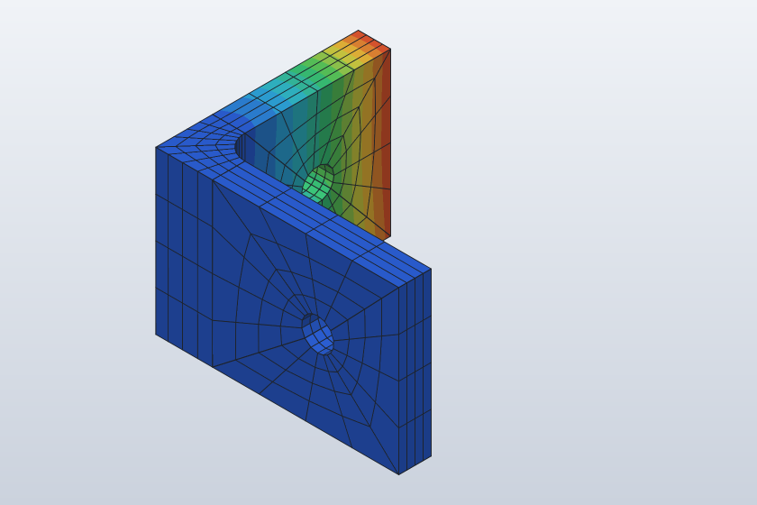

Run a native analysis and inspect it in FieldCraft
Use the Linux x86-64 workstation bundle from the plugin workflow. Extract the tarball, enter its directory and launch the included version:
python3 scripts/solidcraft_compact_desktop.py ./solidcraft-trivariate-0.5.0.zip
Install SolidCraft 0.48.1 and FieldCraft 0.8.1 on the workstation. The launcher
looks for both the FieldCraft desktop and CLI. For an extracted installation
pass the executable paths with --fieldcraft and --fieldcraft-cli.
A workstation without FieldCraft can still use the CAD commands.
Choose the domain and job
Open FieldCraft IGA Bridge Status in the plugin commands. When it reports ready, choose Solve and Display IGA Field. Check the recipe and job names before submitting. These are files in the approved companion folder; the request captures their contents. Use the supplied bracket case first. For a new case, provide a complete trivariate recipe and a mechanical job whose boundary selections actually exist on that model.
Inspect the result
FieldCraft opens the result archive. Select the solved step and request Contours for displacement magnitude or von Mises stress. Use Deformed Shape to inspect the direction of deflection. An automatic deformation scale amplifies the motion for display. For values in physical units, read the contour legend or export the field. Keep the original mechanical result JSON for reactions, residual and energy. See FieldCraft analysis exchange.


Displacement magnitude on the undeformed bracket, from 0 mm (blue) to 0.13814 mm (red). FieldCraft 0.8.1 drew this view after reopening the sample archive. Four subdivisions per chart direction give 640 display hexahedra; the native analysis still has ten charts.
If the operation stops
Unavailable: verify that both FieldCraft executables and the native solver are available to the launcher. Start the compact launcher after installing or moving the applications.
Missing recipe or job: use filenames relative to the approved companion directory of the profile you launched. A desktop opened by another launcher can have a different profile.
Support or load selection rejected: compare feature names and plane coordinates with the constructed model’s design faces. A face selected on the screen does not automatically define a mechanical boundary condition.
Unchanged result after editing the CAD body: identify the complete updated trivariate recipe, update its job and submit a new named case.